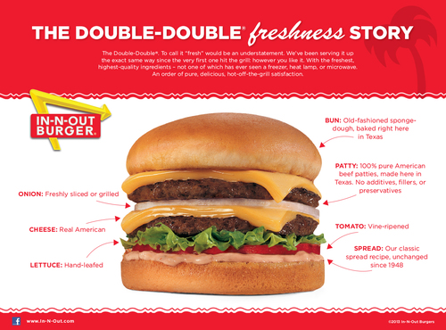

"In a NY Times story, Danny Meyer -- who grew up in St. Louis -- mentions how he was inspired to create Shake Shack thanks to all the time he spent as a teenager at Steak 'N Shake, and how he “loved how they smashed little disks of beef into delicious griddled burgers." To quote Kevin Alexander of the Thrillist.
The structure of a burger should be perfectly. The construction of a burger is crucial to the burger eating experiance, you need a bun thats not to soft so it doesn't fall a part but strong enough to support the patty itself. IN'N'OUT has their burger structure down to a science, they toast their bottom bun longer than the top one to create a stronger crust to support the world famous IN'N'OUT, they then lay triangle cut pieces of iceberg lettuce to keep the juices of the patty from soaking through the bottom bun, and then they top it of with a thick cut Beef steak tomato, your choice of grilled or raw onions, and a finial layer of that world famous spread